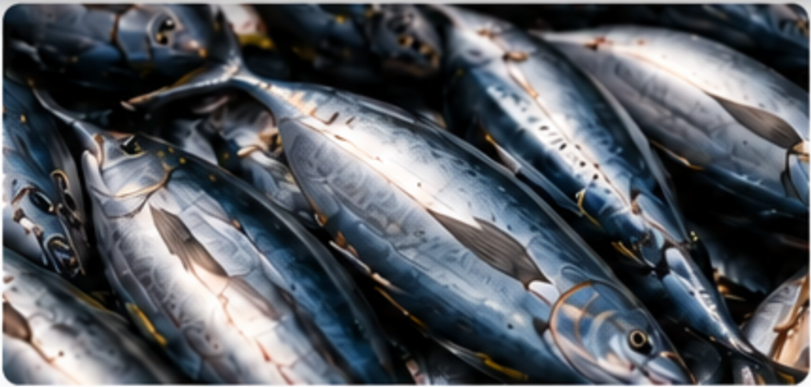

Informasi Prediksi
- Jenis Ikan : Cakalang
- Tanggal Prediksi : 12 Mei 2025, 10:23
- Wilayah : Kota Ternate
- Alat Tangkap : Jaring
- Musim : Kemarau
Hasil Klasifikasi
Tinggi
Tingkat produksi ikan tangkapan diprediksi dalam kategori tinggi.
Kesimpulan
Berdasarkan data yang dimasukkan, hasil klasifikasi menunjukkan bahwa tingkat produksi ikan cakalang di wilayah Kota Ternate pada musim kemarau berada dalam kategori tinggi.
Saran untuk Nelayan
Pada kondisi ini, disarankan untuk tetap melanjutkan aktivitas penangkapan dengan memperhatikan kondisi cuaca dan keselamatan di laut agar hasil tetap optimal.